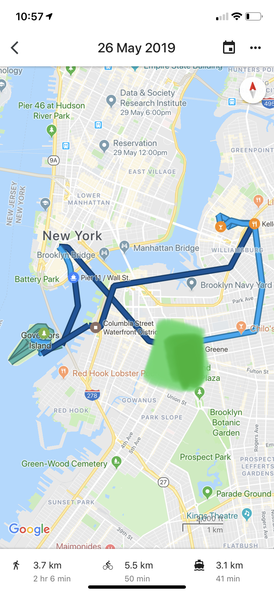
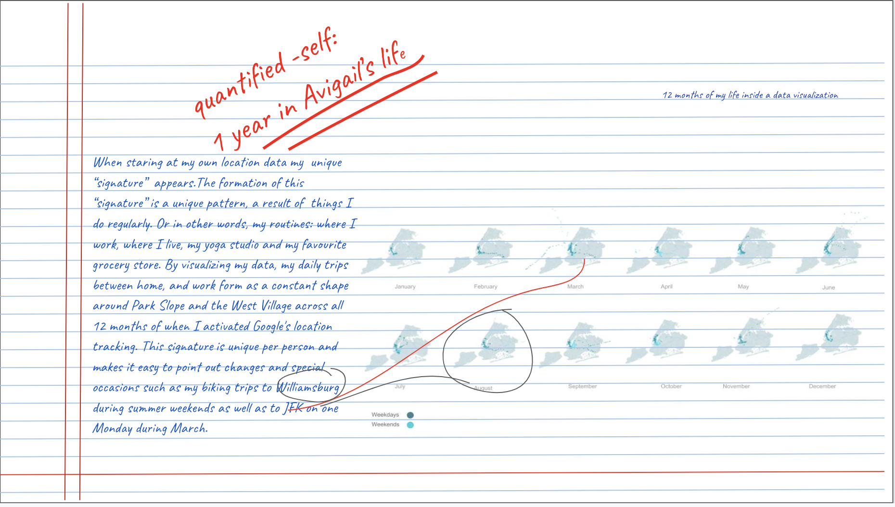

I love tracking myself and documenting places I go to. I use Google Timeline to track my geolocation data and my daily locations regularly. Below is an example of how my data looks like on a Google maps interface for a (particularly active) day during Memorial day weekend:
From time to time I take a deeper look at my daily routines and download my json data through the Google Takeout platform. I love to explore my data and create visualizations that help me better understand my behavior patterns. For example: which trains I take to get to work (mostly B, but also D, Q, C, and N).
I also like to explore my whereabouts using tools like time-series animations which help me understand how I spend my weekends, which days of the week I actually make the effort to go to yoga or to the gym, and which days are solely spent traveling from home to work and back home.